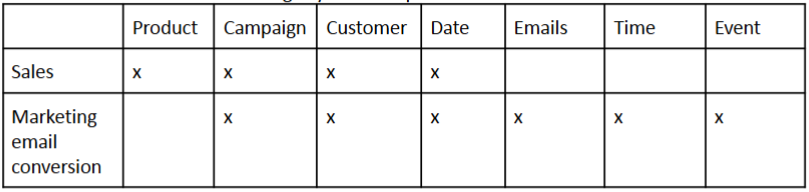
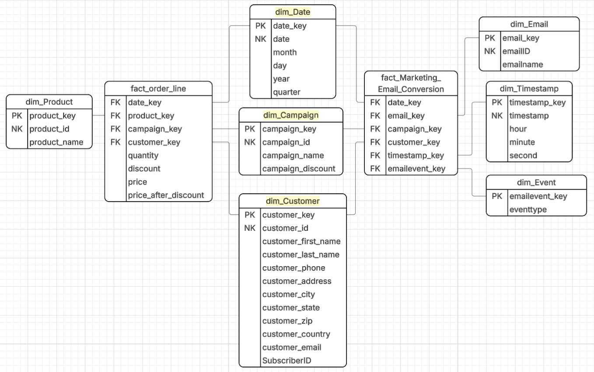
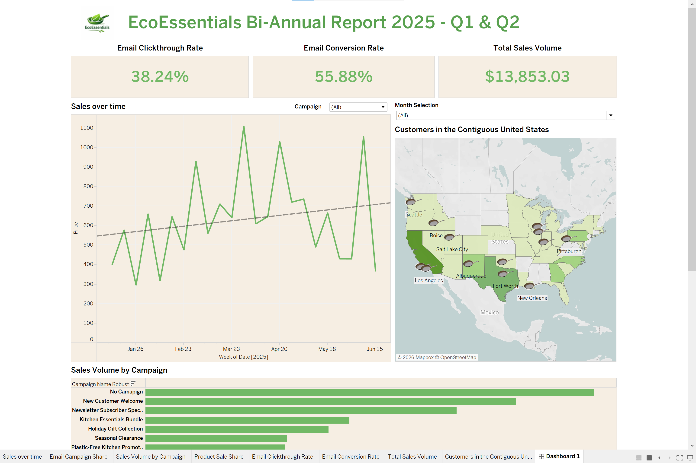

DATA 5360 · SNOWFLAKE · DBT
Eco Essentials Analytics
I helped design an analytics warehouse for an eco-friendly cookware company. It brings sales and marketing email activity into one place so the team can follow orders over time and connect campaign events to purchases.
Two business processes
The project starts with two questions: How are online sales changing? Which campaign emails lead to purchases? The source data comes from online transactions in Amazon RDS Postgres and email events from Salesforce Marketing Cloud in AWS S3.

A shared dimensional model
I used a star schema so the two processes could share dimensions without forcing them into one fact table. The sales fact is at the order-line grain: one product in one order, with its quantity, discount, original price, discounted price, customer, date, and optional campaign.
The marketing fact records one subscriber interaction with a campaign email at a point in time. It is factless: each row represents an event, such as sent, opened, or clicked, linked to email, campaign, customer, date, event type, and timestamp dimensions.

From source systems to Snowflake
- Extract and load. Fivetran syncs the RDS transaction data and Salesforce Marketing Cloud events into Snowflake landing tables.
- Transform. dbt builds the Eco Essentials dimensions and facts from those landing tables. Dimension keys use
dbt_utils.generate_surrogate_key. - Schedule. Fivetran connectors sync every 24 hours, and dbt transformations run on the same cadence.
The campaign dimension joins campaign records across the marketing and transaction sources. For order lines, campaign is optional because not every purchase came from a promotion.
Checks on the warehouse
I added dbt tests for unique dimension values, required dates and timestamps, valid email event types (SENT, OPEN, and CLICK), and relationships between facts and their dimensions. The campaign relationship on order lines is intentionally optional.
The final models were checked by running queries in Snowflake and reviewing the resulting table structures.
A dashboard for the business questions
The Tableau dashboard connects to Snowflake and puts the transformed data in a form stakeholders can explore for sales trends and email engagement.

Source code
- Eco Essentials dbt project · models, schema, tests, and README
- Eco Essentials models
- Order-line fact model
- Marketing email conversion fact model
- dbt schema and tests